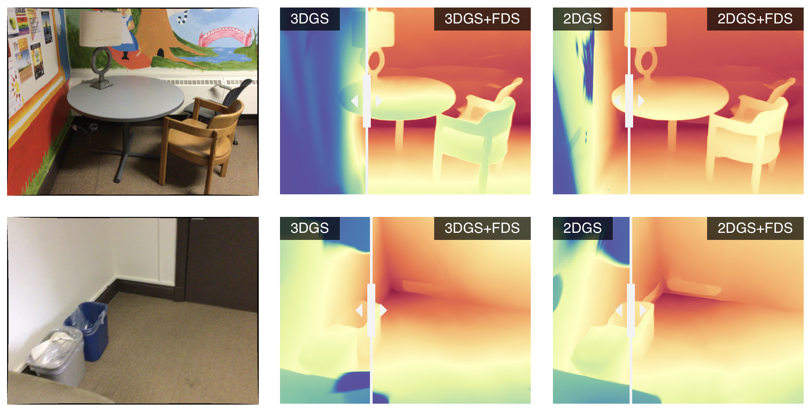
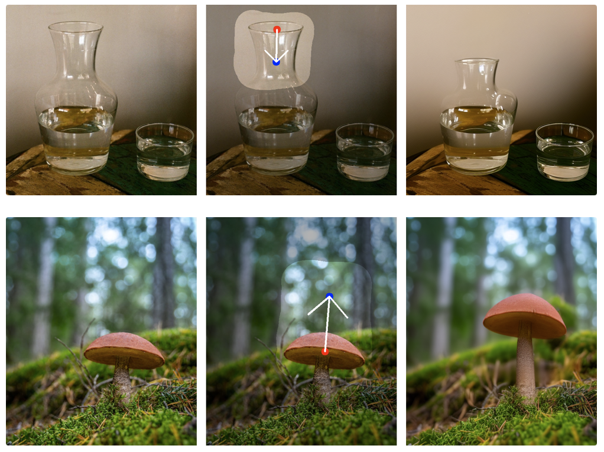

Brief Introduction简介
I am a first-year Ph.D. student at Nanjing University, supervised by Prof. Yao Yao and Prof. Tieniu Tan. Previously, I pursued a Ph.D. at the Harbin Institute of Technology. I earned my M.S. from the Harbin Engineering University in 2021, where I was advised by Prof. Jian Guan.
我目前是 南京大学 博士一年级学生，导师为 姚遥教授 和 谭铁牛教授。之前在 哈尔滨工业大学 攻读博士学位。2021 年获得 哈尔滨工程大学 硕士学位，导师关健教授。
I have been working at leading 3D generation startup Taichi (Meshy AI) and VAST (Tripo AI) to pushing the boundaries of 3D assets creation.
我曾在领先的 3D 生成初创公司 Taichi（Meshy AI）和 VAST（Tripo AI）工作，推动 3D 资产创建的边界。
Research Interests研究方向
My research interests are in computer vision and graphics, with a particular focus on 3D and 4D reconstruction and generation. I am also exploring recent advances in neural rendering and generative models. My work aims to reconstruct and synthesize realistic representations of the physical world.
我的研究兴趣主要集中在计算机视觉与图形学，特别关注3D和4D的重建与生成。我还在探索神经渲染和生成模型的最新进展。我的研究致力于重建和合成物理世界的真实表征。
I'm also interested in high-performance GPU and Graphic programming, including CUDA and Vulkan (also kind of knowing OpenGL and Metal).
我也对高性能 GPU 和图形编程感兴趣，包括 CUDA 和 Vulkan（也了解 OpenGL 和 Metal）。
Recent News最新动态
- 2025‑05‑06 – In summer 2025, I will intern with Apple 3D Vision in Hong Kong.2025 年夏，将前往香港 Apple 3D Vision 团队实习。
- 2024‑09‑27 – Two papers (Direct3D, FastDrag) accepted to NeurIPS 2024.两篇论文 (Direct3D, FastDrag) 被 NeurIPS 2024 接收。
- 2024‑07‑01 – Three ECCV 2024 papers: Relightable 3D Gaussian, STAG4D, UniDream.三篇 ECCV 2024 论文：Relightable 3D Gaussian、STAG4D、UniDream。
Selected Publications论文发表
-

Flow Distillation Sampling: Regularizing 3D Gaussians with Pre‑trained Matching Priors
Lin-Zhuo Chen *, Kangjie Liu *, Youtian Lin, Zhihao Li, Siyu Zhu, Xun Cao, Yao YaoICLR 2025
-

Direct3D: Scalable Image‑to‑3D Generation via 3D Latent Diffusion Transformer
Shuang Wu*, Youtian Lin*, Feihu Zhang, Yifei Zeng, Jingxi Xu, Philip Torr, Xun Cao, Yao YaoNeurIPS 2024
-

FastDrag: Manipulate Anything in One Step
Xuanjia Zhao, Jian Guan, Congyi Fan, Dongli Xu, Youtian Lin, Haiwei Pan, Pengming FengNeurIPS 2024
-

STAG4D: Spatial‑Temporal Anchored Generative 4D Gaussians
Yifei Zeng*, Yanqin Jiang*, Siyu Zhu, Yuanxun Lu, Youtian Lin, Hao Zhu, Weiming Hu, Xun Cao, Yao YaoECCV 2024
-

Gaussian‑Flow: 4D Reconstruction with Dynamic 3D Gaussian Particles
Youtian Lin, Zuozhuo Dai, Siyu Zhu, Yao YaoCVPR 2024 (Highlight)
-

-

UniDream: Unifying Diffusion Priors for Relightable Text-to-3D Generation
Zexiang Liu*, Yangguang Li*, Youtian Lin*, Xin Yu, Sida Peng, Yan-Pei Cao, Xiaojuan Qi, Xiaoshui Huang, Ding Liang, Wanli OuyangECCV 2024
-

Full list on 更多论文见 Google Scholar.
Community Service社区服务
- Reviewer – SIGGRAPH Asia, ICCV, NeurIPS, ICLR, ICASSP会议审稿 – SIGGRAPH Asia、ICCV、NeurIPS、ICLR、ICASSP
Open‑Source Projects开源项目
Pointrix
Differentiable point‑based rendering library.
可微点渲染库。
threestudio‑3DGS
Gaussian Splatting extension for threestudio.
threestudio 的 Gaussian Splatting 扩展。
taichi‑nerfs
Taichi + PyTorch Instant‑NGP training pipeline.
基于 Taichi + PyTorch 的 Instant‑NGP 训练管线。
taichi‑ngp‑renderer
Instant‑NGP renderer in pure Python.
纯 Python 实现的 Instant‑NGP 渲染器。
nerfacc
Fast NeRF acceleration toolkit (contributor).
快速 NeRF 加速工具箱（贡献者）。